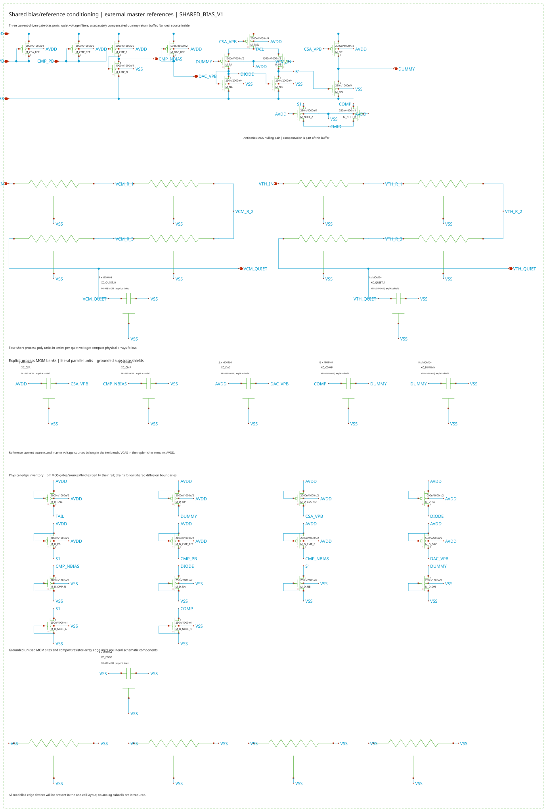
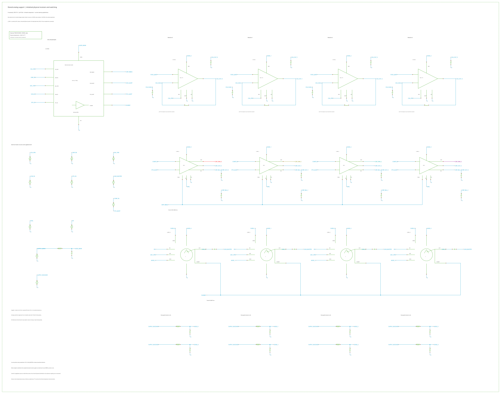

Architecture and detector replay · CSA · Comparator · Controller
Shared analog bias and reference support
Loading pinned native evidence…
Modules/SHARED_BIAS_V1 conditions external master references outside repeated channels. Three external current seeds set CSA, comparator and replenisher biases. Two external voltages set common mode and threshold. The comparator N-bias conversion, quiet filtering and compensated DUMMY-return buffer are on chip; the buffer reuses the CSA bias.
Compact overview plots; zoom is disabled. Displayed samples preserve time-bin extrema. Numerical results use full native data retained locally.
Keep the quiet references separate from the switched return
Independent process-poly/MOM filters feed VCM_QUIET and VTH_QUIET. The replenisher's DUMMY return enters its own compensated two-stage buffer and reservoir. MOS nulling elements and the compensation bank are designed with that amplifier. Their cold conductance differs strongly from the room model, so the complete loop is checked at both temperatures.
The external gm/Id tables provide device sizing and a finite-drain-bias starting estimate. Native operating points and loop measurements check the actual implemented devices. Each quiet resistor uses four series units. Matched MOS groups use interleaving, shared diffusion, weighted common centroids, explicit dummies and contacted guards.
The diagnostic injects the same small signal at both physical high-impedance feedback gates, preserving all route R/C; their near-crossover mismatch is checked. It is a named voltage-loop measurement. Transient sharing checks complement it; it is not a general multiloop or chip-isolation certificate.
Power from the supply, including shared support
The bank and receiver rails have finite feeds and explicit 100-pF VDD/VSS decoupling. Idle, active and recovery measurements span 50 complete reference-clock periods. Upstream supply work includes reference branches, buffers and drivers; positive external reference/command/clamp work stays explicit. The table divides the demonstrated one- or four-receiver fixture only.
Reservoir-energy changes are recorded and never subtracted. This fixture excludes the shared clock generator and digital controller; their costs enter the complete-channel heat account.
| Temperature / receivers | Bank idle / active (µW) | Active bank per receiver (µW) | Whole fixture per receiver (µW) | Net pulse (fC) | Calibrated holdout RMS (%) |
|---|
Bank power-up from zero
These runs ramp supplies, voltage references and master currents from an unpowered state. Declared gate/reference capacitances and continuous return-current sources provide one/four-channel engineering loads. The fixed overview shows the entire startup and settling record.
This is bank power-up under declared load envelopes. The CSA has no reset across Cf and needs a defined charge state; its physical integrator startup is a separate question.
Actual initialized receivers, synchronous switching
One bank drives one/four complete extracted CSA, comparator and replenisher modules. Each CSA retains its qualified 3-pF detector/Cf loop and 100-fF output load. Complete native checkpoints establish the charge state; the numerical DC-closure inductors shown in the inspection fixture are removed before every transient. The actual solved initial state is checked independently.
Behavioral EVAL and EN commands apply a 50-MHz synchronous burst. Replenisher OUT is clamped through a current probe for this module test. Early pulses establish charge calibration; later pulses are holdouts. All switching lobes enter net charge. These deterministic records do not establish random-noise or electron resolution.
The native topology checker adds guard paths at the floating Cf observer nodes. Their notices and initial probe-current residuals are retained with the solver settings. They are numerical effects; they are not interpreted as measured leakage or intrinsic noise. Cadence explains the floating-node conductance mechanism.
Stationary model noise through 50 MHz
Source and full-PEX spectra retain the six shared outputs with one consistent set of external ideal references and four-channel equivalent loads. The bands separate slow drift from the acquisition band. Reference-source noise, receiver intrinsic noise and clocked noise mixing are outside these stationary bank spectra.
The factory room model is the reference. The exploratory cold card inherits unmeasured noise/CV and passive temperature behavior. These curves are model predictions; clocked noise-on/off transient comparisons belong to the complete-channel study.
Inspect the circuits and masks




Acceptance and limits
The raw LVS ambiguity rows name interchangeable parallel MOM units; unequal reduction names off dummies. Their explicit audit accompanies strict CORRECT comparison and every-channel mask binding. Remaining metal-density checks belong to chip assembly/fill, and manual reminders stay separate from leaf geometry acceptance.